GridDataControl implements visual styles that set up a common appearance to all the components in the grid. The term appearance refers not only to the way the grid elements appear but also the manner in which they behave in response to the user interactions like hovering mouse over them, clicking, and so on. Grid has in-built support for the following skins:
· Default
· Blend
· Office2007Blue
· Office2007Silver
· Office2007Black
· BureauBlue
· GlassyGreen
· ShinyBlue
· ShinyRed
· SunBlack
· TwilightBlue
· Office14Blue
· Office14Silver
· Office14Black
· VS2010
Use Case Scenarios
Skin provides better look and feel for an application.
Sample Link
Blend Styling Demo sample in the sample browser is purely customized in XAML through GridDataStyleManager class. To access Blend Styling Demo:
1. Open Syncfusion Dashboard.
2. Select User Interface.
3. Select WPF drop-down list and select Run Locally Installed Samples.
4. Select GridDataControl.
5. In Visual styles menu, select Grid Visual style Demo.
Visual styles can be set for a grid by using the VisualStyle property. The following code illustrates this:
|
[XAML]
<syncfusion:GridDataControl x:Name="dataGrid2" AutoPopulateColumns="False" AutoPopulateRelations="False" ItemsSource="{StaticResource ordersSource}" syncfusion:SkinStorage.VisualStyle="Office2007Blue" /> |
|
[C#]
SkinStorage.SetVisualStyle(dataGrid2, "Office2007Blue"); |
The following images show different visual styles applied to the grid.
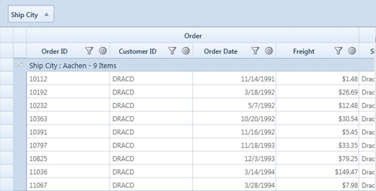
Figure 205: Office14Blue
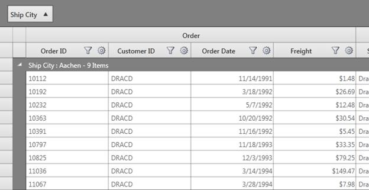
Figure 206: Office14Black
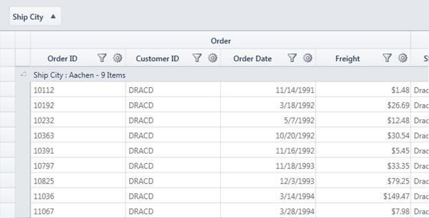
Figure 207: Office14Silver
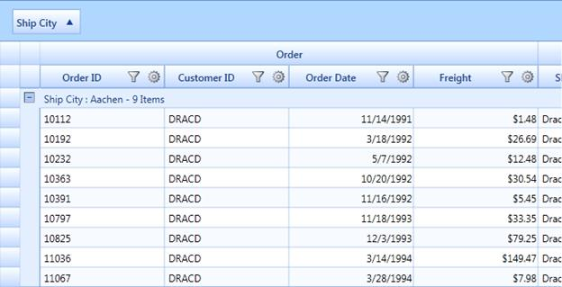
Figure 208: Office2007Blue
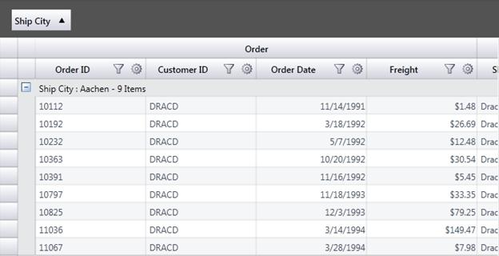
Figure 209: Office2007Black
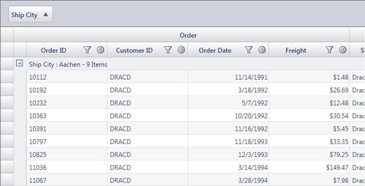
Figure 210: Office2007Silver
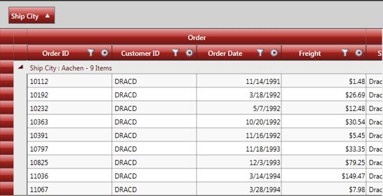
Figure 211: ShinyRed
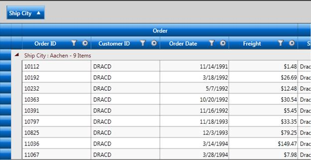
Figure 212: ShinyBlue
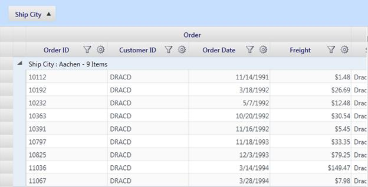
Figure 213: BureauBlue
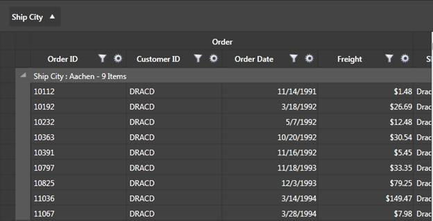
Figure 214: Blend
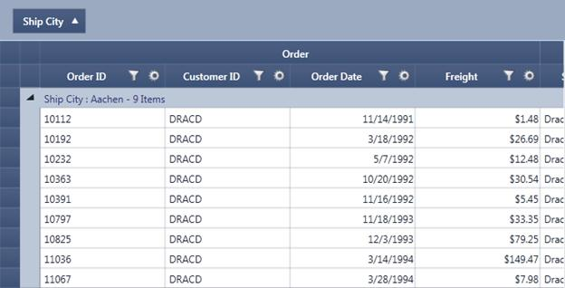
Figure 215: VS2010
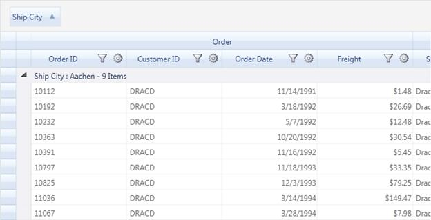
Figure 216: Windows7
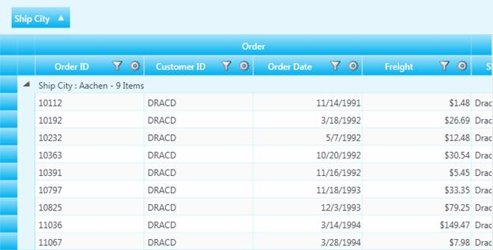
Figure 217: TwilightBlue
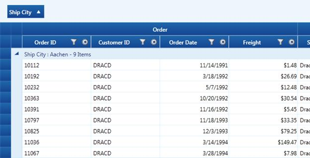
Figure 218: Syncfusion
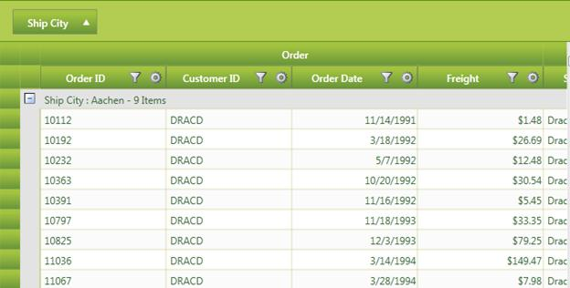
Figure 219: GlassyGreen
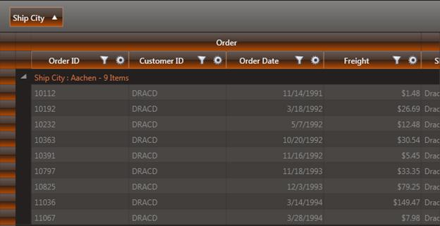
Figure 220: SunBlack
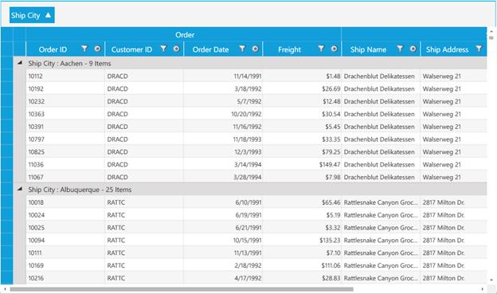
Figure 221: Metro
It is possible to define your own visual style for the GridData control. As a first step, you need to define a custom style by deriving from the IGridDataVisualStyle interface, and by defining custom brushes for various grid elements.
You should direct the grid to use this custom style by specifying Custom option in its VisualStyle property. This can be done by using the following code:
|
[C#]
this.dataGrid.CustomVisualStyle = new GridDataGlassyGreenStyle(); this.dataGrid.VisualStyle = VisualStyle.Custom; |
The following screen shot shows the custom visual style set for the grid using the above given code:
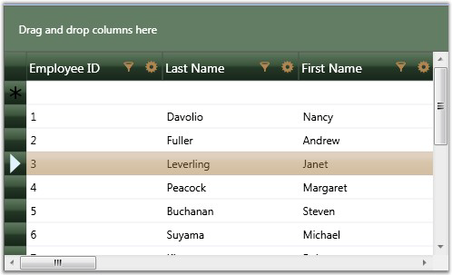
Figure 222: Grid applied with Custom Visual Style
Custom Visual Style can be defined for nested tables too. The following code illustrates this:
|
[XAML]
<Window.Resources> <ObjectDataProvider x:Key="CustomerTable" MethodName="GetDataTable" ObjectType="{x:Type local:Data}" /> <CollectionViewSource x:Key="orderSource" Source="{StaticResource CustomerTable}" > </CollectionViewSource> <local:GridDataVisualStyleConverter x:Key="styleConverter" /> <ObjectDataProvider x:Key="GreenStyle" ObjectType="{x:Type local:GridDataGlassyGreenStyle}"/> </Window.Resources> <syncfusion:GridDataControl x:Name="dataGrid" ShowRowHeader="True" ShowColumnOptions="True" ShowGroupDropArea="True" ShowFilters="True" AutoPopulateColumns="True" AutoPopulateRelations="False" ItemsSource="{StaticResource orderSource}"> <syncfusion:GridDataControl.Relations > <syncfusion:GridDataRelation RelationalColumn="Employee_Orders" RelationType="MasterDetails" > <syncfusion:GridDataRelation.TableProperties> <syncfusion:GridDataTableProperties CustomVisualStyle="{Binding Source={StaticResource GreenStyle}, Converter={StaticResource styleConverter}}" VisualStyle="Custom" AutoPopulateColumns="True"> </syncfusion:GridDataTableProperties> </syncfusion:GridDataRelation.TableProperties> </syncfusion:GridDataRelation> </syncfusion:GridDataControl.Relations> </syncfusion:GridDataControl> |
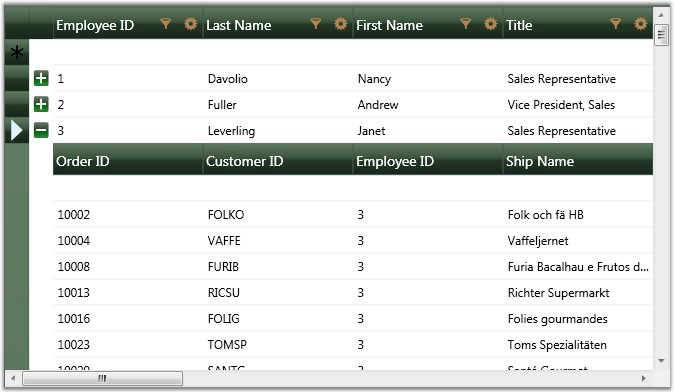
Figure 223: Custom Visual Style for nested grid
Note: IGridDataVisualStyle is deprecated and this information is provided only for legacy reasons. The recommended approach for customizing the GridDataControl is using GridDataStyleManager class through Microsoft Expression Blend.
There are substantial differences in the implementation of the new Skins in version 9.2 (and later). To maintain backward compatibility with the Skins included in earlier versions, EnableLegacyStyle property needs to be set to true.
Breaking Change in 9.2
Previously, AlphaBlend was set in DrawSelectionOptions by default. But currently it is turned off. If you need AlphaBlend color to be applied for selection, we need to set DrawSelectionOptions property in application as mentioned in the following code snippet:
|
[C#] this.grid.DrawSelectionOptions = GridDrawSelectionOptions.AlphaBlend | GridDrawSelectionOptions.ReplaceBackground | GridDrawSelectionOptions.ReplaceTextColor;
|